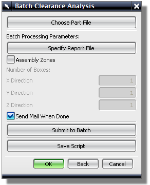

指定报告文件：让您指定报告文件的名称和目录位置。
装配区域：选定后，可以将装配分割为较小的区域。
完成后发送邮件：分析完成后发送电子邮件通知。
提交批处理：创建一个临时脚本文件并启动运行批处理程序的进程，您必须打开部件文件才能运行批处理作业。如果对部件进行了修改，NX 会发出警告，让您在运行批处理作业之前保存文件。
保存脚本：创建脚本以执行批处理作业。随后，可以在操作系统的提示下执行此脚本。
如果希望继而运行多个分析，则使用此选项。
